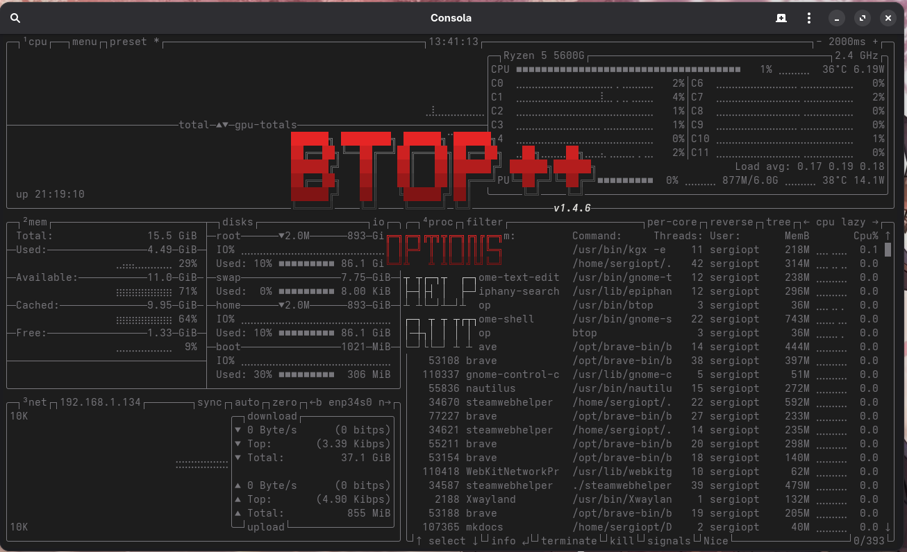
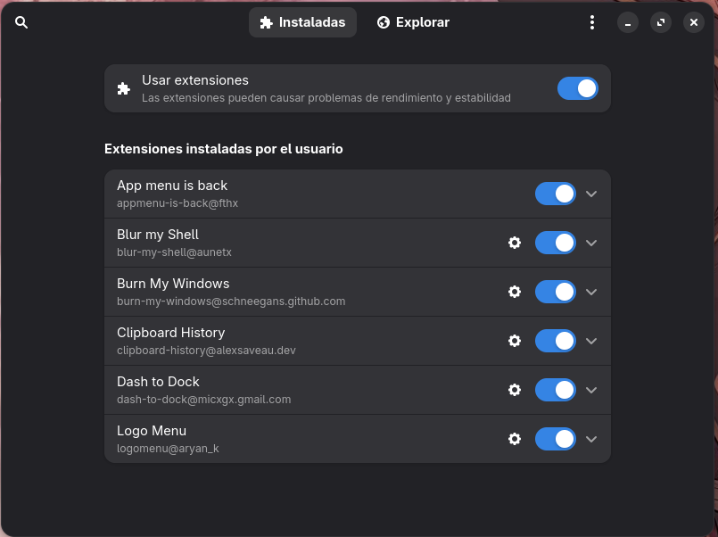

Configuración del sistema
Gestor de paquetes para AUR
El AUR (Arch User Repository) es un repositorio mantenido por la comunidad donde se encuentran los programas que no están en los repositorios oficiales.
Hay varios gestores de AUR pero en mi caso utilizo yay. Para instalar:
sudo pacman -S --needed git base-devel
git clone https://aur.archlinux.org/yay.git
cd yay
Instalamos el paquete:
makepkg -si
Cuando termine la instalación podemos eliminar el repositorio clonado:
cd ..
rm -rf yay
Los paquetes que no están en los repositorios oficiales se pueden descargar de AUR, pero siempre con precaución y sabiendo lo que instalamos, ya que no pasan las mismas revisiones que en los repos oficiales.
En mi caso me ha venido bien para instalar Brave, Android Studio, VS Code (distribución de Microsoft), etc.
Monitorización del sistema operativo
Quiero incluir esta sección para dar a conocer mi aplicación favorita de monitorizacion, esta aplicacion es btop.

Muestra una interfaz desde la terminal para visualizar los procesos y el rendimiento del equipo. Además se puede personalizar de manera bastante intuitiva.
Para instalar en Arch Linux es tan sencillo como:
sudo pacman -S btop
Siempre es más convenientes instalar de repos oficiales que de AUR :)
Extensiones de GNOME
Como mencioné en la presentación, uso GNOME, el cual sin extensiones es demasiado simple :(
En esta sección voy a explicar desde 0 como se instalan las extensiones.
Necesitamos un gestor de extensiones, el cual instalaremos a través de Flatpak, si no tenemos flatpak es momento de instalarlo:
sudo pacman -S flatpak
Ahora instalamos el gestor de extensiones en caso de que tampoco venga instalado:
flatpak install flathub com.mattjakeman.ExtensionManager
Ahora desde la aplicación que hemos instalado podemos descargar las extensiones desde Explorar y visualizarlas desde Instaladas.
Las extensiones que estoy usando son:
- Burn My Windows: incluye varias animaciones al abrir y cerras las aplicaciones, yo uso "Aparición".
- Clipboard history: historial para el portapapeles que por defecto se abre con SUPER + SHIFT + V.
- Dash to dock: el clásico dock de GNOME, pero personalizable.
- Logo menu: muestra el logo de la distribución con varias opciones en la barra superior.

Aún con estas extensiones es un GNOME bastante minimalista, lo cual aprecio.